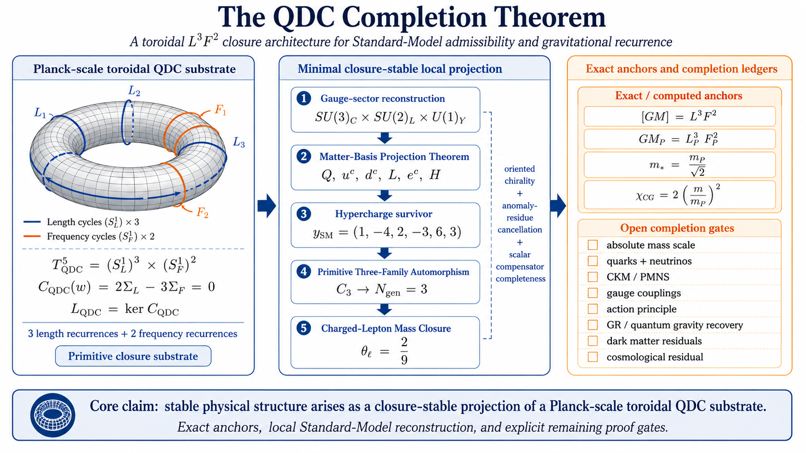
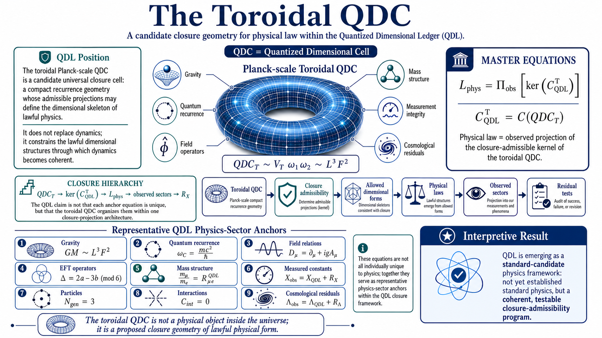
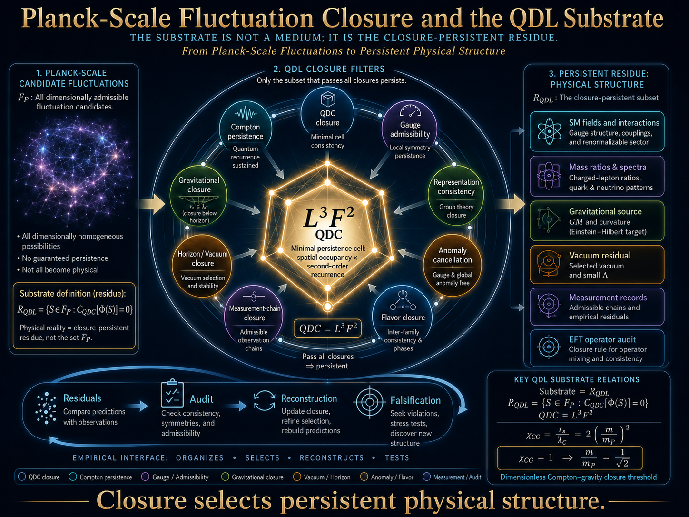
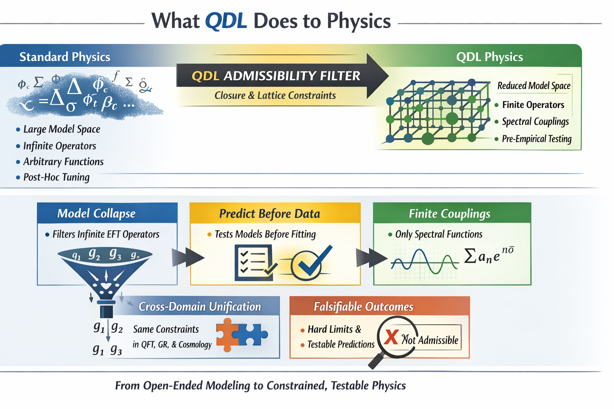

The Quantized Dimensional Ledger: A Structural Admissibility Framework for Physics
QDL introduces a prior structural question before model fitting or dynamical elaboration: should a proposed physical expression be admitted as a coherent representation at all?
Standard dimensional analysis checks unit consistency. QDL investigates the stronger question of whether physical representations remain closed under composition, iteration, renormalization, measurement chains, and cross-scale transformations.
Why closure? Physical models are not evaluated once. They are composed, iterated, renormalized, measured, and transported through chains of transformations. Standard dimensional analysis ensures consistency at a single step but does not guarantee stability under repeated composition. The current QDL path now has seven clear anchors: the canonical program roadmap, the first peer-reviewed metrology foundation, the Planck-scale substrate architecture, the Toroidal QDC as geometric closure keystone, the QDC Completion Theorem as the Standard-Model completion spine, the SMEFT Γ(O) audit companion as falsifiable operator-governance test, and the charged-lepton mass-spectrum sequence as the numerical spectrum application.
For a short, equation-light introduction before entering the full roadmap and paper sequence, start with QDL in 5 Minutes. It explains the basic problem, the structural-admissibility idea, the Quantized Dimensional Cell, current application areas, and how to read QDL claims without over-reading them.
May 2026: The current top-level orientation record for the Quantized Dimensional Ledger program is From Closure Admissibility to Physical Selection: A Roadmap for the Quantized Dimensional Ledger Program .
This roadmap consolidates QDL across dimensional closure, QDC geometry, operator governance, mass-spectrum architecture, substrate persistence, measurement-chain integrity, claim-status firewalls, failure modes, and near-term validation paths. It is the recommended starting point for understanding how the major QDL records fit together.
Scope note: the roadmap frames QDL as a structural-admissibility program, not a completed unification theory. It distinguishes definitions, reconstructions, ansatz-level hypotheses, audits, residuals, and theorem targets so that QDL can be evaluated by explicit claim status and reproducible validation paths.
June 2026: The QDL program has reached a new theorem-status milestone: The QDC Completion Theorem: Matter-Basis Minimality, Three-Family Automorphism, Charged-Lepton Closure, and Gravitational Recurrence in the Quantized Dimensional Ledger .
This paper consolidates the current QDL completion spine from the Planck-scale toroidal QDC substrate to local Standard-Model admissibility and gravitational recurrence. It organizes the program around exact anchors, conditional reconstruction gates, and explicit remaining proof targets.
The central claim is deliberately status-controlled: stable physical structure is proposed to arise as a closure-stable projection of a Planck-scale toroidal QDC substrate. The theorem does not claim that every Standard Model constant has been computed. Instead, it identifies the finite gates that must close for QDL to become a candidate substrate-level completion theory.


Recommended Reading Path
The current seven-anchor hierarchy for evaluating QDL coherently.
QDL Roadmap / Program Architecture
Canonical orientation record. Consolidates QDL from closure admissibility to physical selection and explains the program layers, claim-status firewalls, failure modes, and near-term validation paths.
JTAP Metrology Paper
First peer-reviewed foundation. Establishes QDL in metrology through dimensional closure, QMU ledgers, and the ontology of physical constants.
Planck-Scale Substrate Capstone
QDL substrate architecture. Defines the substrate as the closure-persistent residue of candidate Planck-scale fluctuation structure, not a medium, material aether, or hidden substance.
Toroidal QDC Knot
Geometric substrate keystone. Gives the substrate a compact closure object: a toroidal two-cycle recurrence mode realizing QDCT = VTω1ω2 ∼ L3F2.
QDC Completion Theorem
Completion-theorem spine. Organizes the path from Planck-scale toroidal QDC closure to Standard-Model admissibility, matter-basis minimality, primitive three-family recurrence, charged-lepton closure, gravitational recurrence, and explicitly declared remaining proof gates.
SMEFT Γ(O) Audit Companion
Falsifiable operator-governance test. Provides a representative source-anchored, machine-readable audit subset for testing closure-vector classification of Warsaw-basis SMEFT operator mixing.
Charged-Lepton / Mass-Spectrum Sequence
Numerical spectrum application. Develops QDL occupancy-amplitude closure, Koide charged-lepton geometry, the relational phase θℓ = 2/9, and charged-lepton mass-ratio reconstruction.
This path gives visitors a coherent progression: canonical program roadmap → peer-reviewed metrology foundation → substrate architecture → geometric substrate keystone → completion-theorem spine → falsifiable operator audit → numerical mass-spectrum application.

May 2026: The canonical QDL geometric substrate-mode paper is The Toroidal QDC Knot: A Closure-Stable Geometric Substrate Mode for the Quantized Dimensional Ledger .
This record extends the Planck-scale substrate capstone by proposing a compact geometric persistence object: the toroidal QDC knot. It defines toroidal QDC modes as closure-stable two-cycle recurrence candidates with QDCT = VTω1ω2 ∼ L3F2.
The paper develops the closure sequence Tn,m → QDCT → ΓT(T) → CTQDL = 0 → RTQDL and connects it conditionally to three-family recurrence, the charged-lepton phase θℓ = 2/9, Koide occupancy-amplitude closure, vacuum residual selection, gauge-sector admissibility, non-SM exclusion, the Compton–gravity threshold m*/mP = 1/√2, and a candidate toroidal QDC Hilbert space.
Scope note: this is a conditional geometric substrate hypothesis. It does not claim a completed derivation of the Standard Model, a full quantum gravity theory, a numerical derivation of the cosmological constant, or a final solution to dark matter, inflation, black-hole microstates, or time.
June 2026: The QDC Completion Theorem consolidates the local Standard-Model, family, charged-lepton, and gravitational recurrence gates of the QDL program: The QDC Completion Theorem: Matter-Basis Minimality, Three-Family Automorphism, Charged-Lepton Closure, and Gravitational Recurrence in the Quantized Dimensional Ledger .
The paper formulates a theorem-status-controlled completion architecture. Its exact or computed anchors include [GM] = L3F2, the Planck identity GMP = LP3FP2, the Compton–gravity threshold m* = mP/√2, and the QDC closure functional CQDC(w) = 2ΣL - 3ΣF.
Scope note: the theorem does not claim that QDL is already a completed final theory of nature. It identifies the finite gate structure that must close for QDL to become a candidate substrate-level completion theory. Open gates include absolute mass scale, quarks and neutrinos, CKM/PMNS, gauge couplings, an action principle, GR/quantum-gravity recovery, dark-matter residuals, and the cosmological residual.
May 2026: The QDL substrate architecture record is Planck-Scale Fluctuation Closure as the Substrate Interpretation of the Quantized Dimensional Ledger: A QDL Capstone on Physical Persistence, Compton–Gravity Thresholds, Mass-Ratio Closure, Vacuum Filtering, and EFT Audits .
This record defines QDL’s substrate interpretation: physical reality is not modeled as a medium or hidden substance, but as the closure-persistent residue of candidate Planck-scale fluctuation structure. It supplies the program’s clearest identity statement: QDL is a closure-admissibility theory of physical persistence.
Key advantages of the capstone: a dimensionless Compton–gravity threshold, m*/mP = 1/√2; a charged-lepton mass-ratio reconstruction; a gravitational QDC-to-curvature bridge; a vacuum-filter toy model; a provisional SMEFT audit criterion; a full matrix-audit protocol; a measurement-chain closure theorem; and a constants-as-closure-operators interpretation.
The capstone is supplemented by the Toroidal QDC Knot as the geometric substrate keystone, by the SMEFT Γ(O) Audit Companion as a falsifiable operator-governance dataset, and by the QDL Roadmap as the canonical program-architecture record.
May 2026: The QDL substrate capstone has a dedicated machine-readable SMEFT audit companion: QDL SMEFT Γ(O) Audit Companion v1.0: A Representative Source-Anchored Subset for Closure-Vector Classification of Warsaw-Basis Operator Mixing .
This dataset turns the capstone’s SMEFT Γ(O) operator-mixing criterion into a citable audit artifact with machine-readable tables: representative Warsaw-basis operator assignments, exact/source-anchored rows, row-level extraction scaffolds, strict-zero and compensator targets, verification taxonomy, data dictionary, changelog, sources table, README, workbook, and package ZIP.
Scope note: the companion is a representative source-anchored subset and scaffold. It does not claim completion of the full 2499 × 2499 three-generation SMEFT anomalous-dimension matrix, and it asserts no confirmed R-class violations.
May 2026: The charged-lepton and mass-spectrum sequence develops the numerical spectrum side of QDL: occupancy-amplitude closure, Koide cone structure, relational phase quantization, and charged-lepton mass-ratio reconstruction.
A current synthesis record is: QDL Charged-Lepton Mass Spectrum: A Synthesis of Derived Structure and Phenomenological Radial Closure .
The mass-spectrum sequence is best read after the QDL roadmap, substrate capstone, and Toroidal QDC Knot because the roadmap provides the program architecture, while the toroidal paper gives a geometric interpretation of three-family recurrence and the charged-lepton relational phase θℓ = 2/9.
April 2026: The Quantized Dimensional Ledger for Metrology: Dimensional Closure, QMU Ledgers, and the Ontology of Physical Constants is published in the Journal of Theoretical and Applied Physics: Bourassa, J. D. (2026). The Quantized Dimensional Ledger for Metrology: Dimensional Closure, QMU Ledgers, and the Ontology of Physical Constants. Journal of Theoretical and Applied Physics, 20(3). https://doi.org/10.57647/jtap.2026.2004.05
This marks the first peer-reviewed journal publication for the QDL research program and establishes a formal publication anchor for the framework’s metrology application.
May 2026: QDL Physics Institute has filed U.S. Provisional Patent Application No. 64/055,985, titled Systems and Methods for Structural Admissibility Validation of Physical Measurement and Modeling Pipelines.
This filing marks the executable infrastructure phase of QDL: applying structural admissibility as a machine-executable validation layer for measurement, modeling, simulation, uncertainty analysis, AI-generated scientific outputs, sensor fusion, digital twins, and related technical workflows.
Status: U.S. provisional patent application filed; patent pending.
Core Closure Sequence
The primary technical entry path into the current QDL program.
The QDL roadmap is now the canonical orientation record. The JTAP metrology paper is the first peer-reviewed foundation. The Planck-scale capstone defines the substrate architecture. The Toroidal QDC gives that substrate a compact geometric closure object. The QDC Completion Theorem supplies the completion-theorem spine from substrate recurrence to Standard-Model admissibility and declared open proof gates. The SMEFT Γ(O) audit companion supplies the strongest falsifiable operator-governance test. The charged-lepton sequence provides the numerical spectrum application.
The Core Closure Sequence remains the broader technical map: it develops spectrum selection, operator governance, gravitational closure, electroweak reconstruction, flavor hierarchy, cosmological ansatz structure, and QDC realizations under declared claim-status categories.
For the full list, see Publications → Core Closure Sequence.
What Changes When You Apply QDL
A second-pass view: from open-ended model building to constrained, testable structure.

Core takeaway: QDL reduces the space of admissible physical models before data is ever considered.
The QDL research program is currently focused on:
- Using the QDL roadmap as the canonical program-architecture record for the full closure-admissibility-to-physical-selection framework.
- Using the JTAP metrology paper as the first peer-reviewed foundation for QDL closure and physical constants.
- Using the QDL substrate capstone as the program-level reference for physical persistence, residual-first admissibility, and substrate-as-residue interpretation.
- Using the Toroidal QDC as the geometric substrate keystone for two-cycle recurrence, family-class closure, vacuum filtering, and quantum-geometry state-space development.
- Using the QDC Completion Theorem as the completion spine for Standard-Model admissibility, matter-basis minimality, primitive three-family recurrence, charged-lepton closure, gravitational recurrence, and declared open proof gates.
- Expanding the SMEFT Γ(O) audit companion beyond its v1.0 representative source-anchored subset toward fuller exact row extraction and block-level matrix coverage.
- Developing the charged-lepton and mass-spectrum sequence as the numerical spectrum application of QDL occupancy-amplitude closure.
- Development of the Core Closure Sequence as the primary technical map for QDL.
- Residual-first benchmark comparisons using publicly available experimental datasets.
- Design of falsifiable tests probing dimensional-closure scaling relations and residual classifications.
- Development of executable structural-admissibility infrastructure for measurement, modeling, simulation, AI scientific-output validation, sensor fusion, and digital-twin workflows.
Program status: Active research, DOI-backed archival development, executable infrastructure development, and manuscript submissions in progress (2026).
U.S. Provisional Patent Application No. 64/055,985, Systems and Methods for Structural Admissibility Validation of Physical Measurement and Modeling Pipelines, was filed in May 2026 to protect the executable infrastructure direction while the scientific framework remains publicly documented through DOI-backed research records.
The QDL Physics Institute is an independent research program based in Huntley, Illinois, USA, focused on the development and testing of the Quantized Dimensional Ledger framework for dimensional closure, physical persistence, model admissibility, residual-first validation, executable measurement integrity, and experimental discrimination.
Research areas: dimensional structure of physical quantities, effective field theory constraints, dimensional closure in metrology, model integrity, closure grammar, gravitational and cosmological closure, toroidal QDC substrate geometry, mass-spectrum closure, executable validation infrastructure, and falsifiable tabletop experiments.
Director: James D. Bourassa | ORCID: 0009-0008-0155-0051
The fastest way to evaluate the current QDL program is the following sequence:
- QDL in 5 Minutes / Short First-Pass Orientation
- Canonical QDL Roadmap / Program Architecture
- Published Metrology Anchor / First Peer-Reviewed Foundation
- QDL Substrate Capstone / Physical Persistence Reference
- Toroidal QDC Knot / Geometric Substrate Keystone
- QDC Completion Theorem / Standard-Model Completion Spine
- SMEFT Γ(O) Audit Companion / Machine-Readable Operator-Mixing Dataset
- QDL Charged-Lepton Mass Spectrum / Numerical Spectrum Application
- Core Closure Sequence / Earlier Technical Roadmap
- QDL Calculator / Executable Demonstration
The QDL framework is intended as a dimensional admissibility, physical-persistence, and closure-governance layer, not a replacement for established physical dynamics.
Research Snapshot
Current entry points into the public QDL program hierarchy.
QDL in 5 Minutes
A short, equation-light first-pass guide for new readers before entering the roadmap, paper stack, and calculator.
QDL Roadmap
The canonical program-architecture record: closure admissibility, physical selection, claim-status firewalls, failure modes, and validation paths.
JTAP Metrology Paper
The first peer-reviewed QDL foundation: dimensional closure, QMU ledgers, and the ontology of physical constants.
QDL Substrate Capstone
The program-level reference for physical persistence, substrate-as-residue interpretation, Compton–gravity threshold, mass-ratio closure, vacuum filtering, and EFT audit logic.
Toroidal QDC Knot
The geometric substrate keystone: compact two-cycle recurrence, toroidal QDC closure, family-class lemma, vacuum filtering, and candidate quantum-geometry Hilbert space.
QDC Completion Theorem
The theorem-status completion spine: Standard-Model admissibility, matter-basis minimality, primitive three-family recurrence, charged-lepton closure, gravitational recurrence, and open proof gates.
SMEFT Γ(O) Audit Companion
A machine-readable dataset that applies QDL closure-vector classification to representative Warsaw-basis SMEFT operator-mixing rows.
Charged-Lepton Mass Spectrum
The numerical spectrum application: Koide occupancy-amplitude closure, relational phase structure, and charged-lepton mass-ratio reconstruction.
QDL Calculator
A live entry point for testing declared vectors against closure rules, exploring admissible and inadmissible configurations, and generating compact report-ready summaries.
Interactive QDL Tool
A live entry point for testing structural admissibility under declared closure rules.
Test declared vectors against canonical closure rules, explore admissible and inadmissible configurations, and use the built-in SMEFT ℤ₆, dimensional-failure, and metrology examples.
The calculator provides a live demonstration layer for the QDL framework and a compact report-ready summary of each result.
Latest Program Updates
Recent publications, benchmarks, and program milestones.
- June 2026: QDC Completion Theorem released — The QDC Completion Theorem: Matter-Basis Minimality, Three-Family Automorphism, Charged-Lepton Closure, and Gravitational Recurrence in the Quantized Dimensional Ledger . This record consolidates the current completion spine from the Planck-scale toroidal QDC substrate to local Standard-Model admissibility, gravitational recurrence, exact anchors, conditional reconstruction gates, and explicit remaining proof targets.
- May 2026: Canonical QDL roadmap released — From Closure Admissibility to Physical Selection: A Roadmap for the Quantized Dimensional Ledger Program . The record consolidates dimensional closure, QDC geometry, operator governance, mass-spectrum architecture, substrate persistence, measurement-chain integrity, claim-status firewalls, failure modes, and near-term validation paths.
- May 2026: Toroidal QDC geometric keystone released — The Toroidal QDC Knot: A Closure-Stable Geometric Substrate Mode for the Quantized Dimensional Ledger . The record defines the toroidal QDC knot as a compact two-cycle recurrence object realizing QDCT = VTω1ω2 ∼ L3F2 and links it conditionally to family recurrence, lepton phase closure, vacuum residual selection, gauge admissibility, non-SM exclusion, the Compton–gravity threshold, and a candidate toroidal QDC Hilbert space.
- May 2026: QDL substrate capstone released and updated — Planck-Scale Fluctuation Closure as the Substrate Interpretation of the Quantized Dimensional Ledger . The record defines QDL as a residual-first closure-admissibility theory of physical persistence and supplies the capstone frame for Compton–gravity thresholds, mass-ratio closure, vacuum filtering, EFT audits, metrology, and constants-as-operators.
- May 2026: Machine-readable SMEFT audit companion released — QDL SMEFT Γ(O) Audit Companion v1.0 . This dataset provides a representative source-anchored subset for closure-vector classification of Warsaw-basis operator mixing, including exact/source-anchored rows, operator assignments, strict-zero and compensator targets, and verification taxonomy. It is not a completed full 2499 × 2499 matrix audit.
- May 2026: Charged-lepton mass-spectrum synthesis released — QDL Charged-Lepton Mass Spectrum . This sequence develops the numerical spectrum application of QDL occupancy-amplitude closure and charged-lepton mass-ratio reconstruction.
- May 2026: Core closure sequence consolidated — The Quantized Dimensional Ledger as a Structural and Numerical Closure Program for Fundamental Physics and QDL Numerical Ledger Companion .
- May 2026: Technical pillars released for spectrum selection, electroweak closure, flavor closure, operator governance, classical gravity, and cosmological closure.
- May 2026: U.S. provisional patent application filed — Systems and Methods for Structural Admissibility Validation of Physical Measurement and Modeling Pipelines. This filing marks the executable infrastructure phase of QDL, including measurement integrity, AI scientific-output validation, software analysis, sensor-fusion filtering, and digital-twin validation. Patent pending.
- May 2026: New Zenodo preprint released — The Quantized Dimensional Cell in Gravitational Dynamics: GM, Keplerian Closure, and Dimensional Admissibility . This paper identifies the gravitational parameter μ = GM as a direct QDC-form realization, L3F2, and interprets Keplerian closure as μ = r3ω2.
- Apr 2026: Journal article published — Bourassa, J. D. (2026). The Quantized Dimensional Ledger for Metrology: Dimensional Closure, QMU Ledgers, and the Ontology of Physical Constants. Journal of Theoretical and Applied Physics, 20(3). https://doi.org/10.57647/jtap.2026.2004.05 .
- Dec 2025: Residual-first benchmark records published for NV ODMR and optical cavity datasets.
Earlier Foundational Papers
Formal background for the current roadmap, substrate capstone, toroidal QDC keystone, and Core Closure Sequence.
Start with QDL in 5 Minutes for a short first-pass introduction. Then read the QDL roadmap as the canonical program-architecture record. Then read the JTAP metrology paper as the peer-reviewed foundation. Continue to the QDL Substrate Capstone for the program-level identity and physical-persistence framework. Next read the Toroidal QDC Knot for the geometric substrate keystone, the QDC Completion Theorem for the completion-theorem spine, the SMEFT Γ(O) Audit Companion for the first machine-readable operator-mixing audit artifact, and the charged-lepton mass-spectrum synthesis for the numerical spectrum application.
The earlier lattice, closure-formalism, SMEFT, metrology, and book records remain important, but they are now best read as background to the broader roadmap, substrate, toroidal keystone, and closure sequence.
Research Goals
Near-term objectives of the Quantized Dimensional Ledger research program.
- Use the canonical QDL roadmap to organize the program from closure admissibility to physical selection.
- Formal development of dimensional closure as a structural admissibility constraint on physical representations.
- Further development of the substrate capstone interpretation: QDL as a residual-first closure-admissibility theory of physical persistence.
- Development of the Toroidal QDC as the geometric substrate keystone for QDL recurrence, family classification, vacuum residual filtering, and candidate quantum-geometry state spaces.
- Development of the QDC Completion Theorem sequence as the Standard-Model completion spine, with explicit follow-up gates for matter-basis orbit class, charged-lepton phase derivation, masses, gauge couplings, action principle, gravity recovery, dark matter, and cosmological residuals.
- Completion and hardening of the Core Closure Sequence across spectrum selection, constants, operators, gravity, cosmology, and residual tests.
- Expansion of the SMEFT Γ(O) Audit Companion from a representative source-anchored subset toward fuller exact coefficient extraction, block-level coverage, and matrix-level closure classification.
- Development of the charged-lepton and mass-spectrum sequence as the numerical application layer of QDL closure.
- Design of falsifiable tabletop experiments capable of distinguishing dimensional-closure predictions from conventional parameterizations.
- Development of executable QDL validation tools for physical measurement, modeling, uncertainty analysis, AI scientific-output checking, sensor fusion, and digital-twin workflows.
Citable Program Record
Archival records and DOI-backed materials for the Quantized Dimensional Ledger research program.
The QDL research program maintains a DOI-backed archival record through Zenodo. Core manuscripts, technical pillars, benchmark records, closure-grammar papers, roadmap records, substrate-capstone records, toroidal QDC records, completion-theorem records, and supporting materials are preserved as citable research artifacts.
- Zenodo Community Archive: QDL Physics Institute Collection
- QDL in 5 Minutes: Short first-pass overview
- Canonical QDL Roadmap: From Closure Admissibility to Physical Selection
- First Peer-Reviewed Foundation: The Quantized Dimensional Ledger for Metrology
- QDL Substrate Capstone: Planck-Scale Fluctuation Closure as the Substrate Interpretation of the Quantized Dimensional Ledger
- Toroidal QDC Knot: The Toroidal QDC Knot: A Closure-Stable Geometric Substrate Mode for the Quantized Dimensional Ledger
- QDC Completion Theorem: The QDC Completion Theorem
- SMEFT Γ(O) Audit Companion: QDL SMEFT Γ(O) Audit Companion v1.0
- Charged-Lepton Mass Spectrum: QDL Charged-Lepton Mass Spectrum
- Core Closure Sequence: Publications → Core Closure Sequence
- QDL Gravitational Dynamics Record: The Quantized Dimensional Cell in Gravitational Dynamics: GM, Keplerian Closure, and Dimensional Admissibility
- Program Book Record: The Quantized Dimensional Ledger: A Structural Framework for Dimensional Coherence in Physics
Maintaining DOI-backed program records supports long-term citation, reproducibility, and accessibility of the QDL research program.
Collaboration & Support
The QDL Physics Institute welcomes collaboration with researchers, experimental groups, metrology laboratories, calibration and accredited testing organizations, and institutions interested in dimensional structure, measurement integrity, executable validation infrastructure, physical-persistence tests, or falsifiable tests of the Quantized Dimensional Ledger framework.
The program also welcomes philanthropic or institutional support that enables continued development of open, DOI-backed research records, executable validation tools, source-anchored SMEFT audit artifacts, toroidal QDC substrate research, completion-theorem gate closure, and experimental benchmark studies.
For collaboration inquiries or discussion of potential support, please contact james.bourassa@qdlphysics.org.